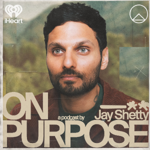
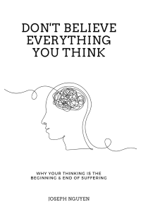
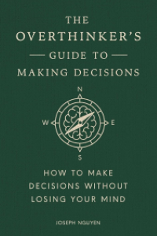
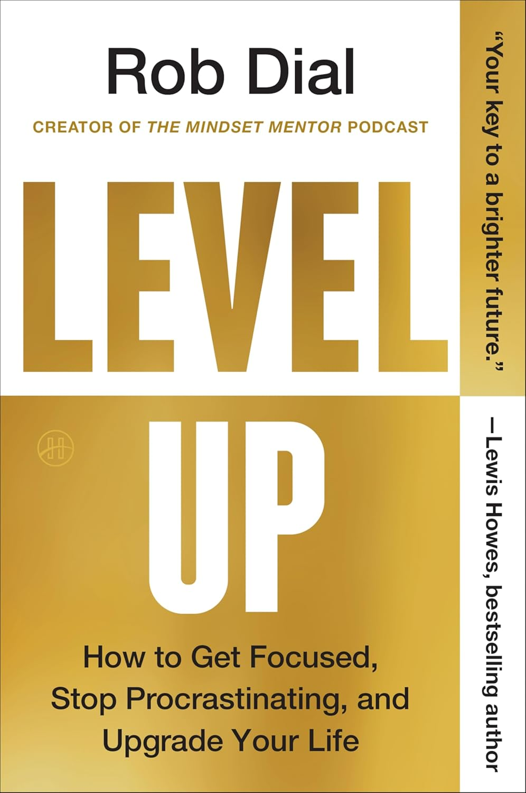
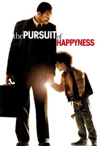
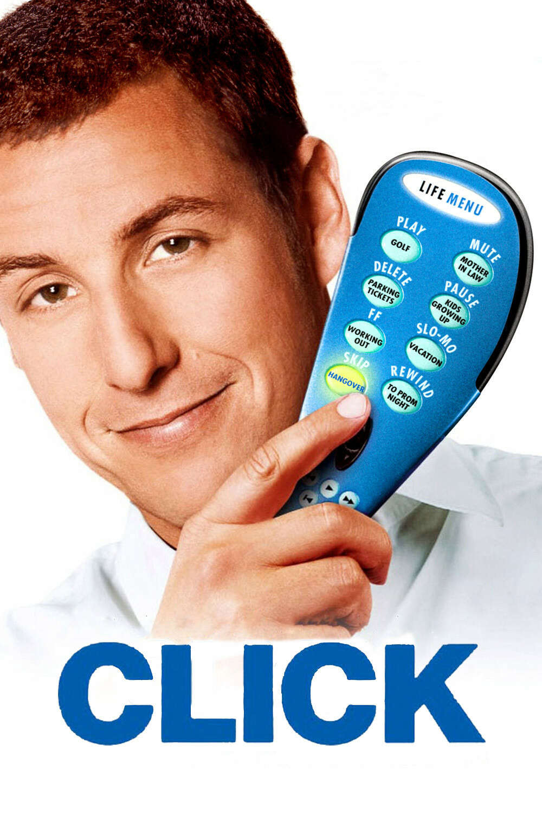

Media Collection
This page is a collection of media meant to help you grow. Everything here (podcasts, books, videos, movies, and quotes) is focused on building better habits, having a stronger mindset, and long-term self-improvement.
You don't need to consume it all. Use this page as a resource, not a checklist. Explore what resonates with you, apply what's useful, and move forward at your own pace.
Podcasts
-
The Mindset Mentor
Rob Dial
A personal-development podcast hosted by Rob Dial that focuses on motivation, discipline, and mental habits. Episodes teach listeners how to retrain their thinking, overcome fear, stop procrastinating, and build the mindset needed to create lasting personal change.
-

How to Be a Better Human
TED
A thoughtful self-improvement podcast that breaks down how to live better in real, everyday ways. It focuses on habits, relationships, mindset, and emotional growth, making personal development feel practical instead of fake or overly intense.
-
On Purpose
Jay Shetty
A self-improvement podcast hosted by Jay Shetty featuring conversations with experts, celebrities, and thought leaders about mindset, relationships, purpose, and mental health. The show aims to help listeners become happier, healthier, and more fulfilled through practical insights and personal growth strategies.
Books
-

Dont Believe Everything You Think
Joseph Nguyen
This book is a practical guide that helps you understand how your thoughts shape your emotional experience and overall well-being. It teaches that the stories your mind creates are not objective truth, and that much of your suffering comes from unexamined thinking patterns rather than actual events. The book offers clear explanations of how thoughts influence emotions, behaviors, and habits, and it provides tools to notice, question, and change unhelpful thinking. By learning to separate your identity from your thoughts, you gain emotional clarity, reduce anxiety and self-criticism, and make room for healthier beliefs. This supports self-healing and improvement by encouraging mindful awareness, emotional regulation, and intentional reframing so you can respond to life with greater peace, perspective, and purpose.
-

The Overthinkers Guide to Making Decisions
Joseph Nguyen
This book examines why overthinking hijacks your decision making and how to interrupt that cycle. The book breaks down the psychological mechanisms behind analysis paralysis, fear of regret, perfectionism, and information overload. Rather than promising “perfect” choices, it focuses on practical, evidence-based strategies for making good decisions, reducing rumination, and trusting outcomes without endless second guessing.
-

Level Up
Rob Dial
Level Up will revolutionize the way you approach your life and your goals. Rob Dial gives you a groundbreaking roadmap to break self-sabotaging patterns and unlock your full potential. When you understand the way the brain and body work together, you can begin to make positive changes.
Videos
-
Beat overthinking in 5 steps
Clark Kegley
This video is about breaking free from overthinking and finally taking action. It explains why thinking more doesn't solve the problem, and why doing something, even if it's small or imperfect, is what actually creates change. You'll learn how to slow your mind, stop putting pressure on yourself to be perfect, and build confidence by taking simple steps forward. If you feel stuck in your head, afraid to start, or overwhelmed by trying to do everything “right,” this video shows you how to move forward anyway.
-
The pain of becoming yourself
Alastair
In this video, Steve Jobs speaks directly to you through three brief stories about dropping out of college, losing and rediscovering his work, and confronting death. His message is clear: you cannot connect the dots looking forward, failure is often necessary, and remembering that your time is limited cuts through fear and expectation. The takeaway is simple—trust your intuition, pursue what you love, and do not settle for a life shaped by others.
-
The Real Reason You Have No Friends (It's not what you think)
Obscurience
This video is not offering solutions or behavior change. Its purpose is awareness. It explains why some people struggle with friendships not because they are broken or antisocial, but because their psychological traits conflict with how most people connect. It argues that overanalyzing interactions, rejecting social fakery, extreme self-reliance, low conformity, and delayed emotional expression quietly repel others, even when you genuinely care.
-
The Most Dangerous Mindset I See as a Therapist
L.S. Author
This video looks at a growing intolerance for struggle and how convenience, technology, and quick fixes are replacing the difficult experiences that build discipline and meaning. Avoiding discomfort, whether in learning, relationships, or personal growth, we sacrifice the internal development that only comes from sustained effort and failure. This ultimately trades long term fulfillment for short term dopamine and low satisfaction.
-
it really is that damn phone
solace
A look at how phones quietly take over daily life. Being without one reveals how distracted, rushed, and disconnected we've become, and why time feels like it's speeding up. Constant stimulation isn't normal. Put the phone down more often, choose what actually matters, and reconnect with the real world before life passes you by.
Movies
-

The Pursuit of Happyness
Gabriele Muccino
The Pursuit of Happyness is a grounded reminder that progress is built through persistence, not luck. It shows what happens when discipline replaces excuses and commitment outlasts comfort. The film challenges you to take responsibility under pressure, keep moving when results are invisible, and protect your belief in yourself even when circumstances offer no reassurance. It's not about shortcuts or motivation. It's about showing up every day, doing the work, and earning a better future step by step.
-
Beautiful Boy
Felix Van Groeningen
Beautiful Boy is a portrayal of addiction. The film focuses on the long, uneven reality of recovery, relapse, accountability, and the strain that addiction places on both the individual and the people who care about them. It does not romanticize suffering or promise quick healing. Instead, it reinforces a hard truth: improvement is possible, but it requires patience, honesty, and sustained effort over time. This is not a motivational film. It is a realistic one, meant to build awareness, responsibility, and respect for the work real change demands.
Triggers: drug addiction, relapse, family distress.
-
Cast Away
Rober Zemeckis
Cast Away is a study in endurance when motivation is gone and hope feels unjustified. Stripped of comfort, certainty, and control, the film focuses on one decision repeated daily: stay alive. Keep breathing. Leep moving. Let time do its work. You may not see a reason to hope, but life changes anyway. The tide brings things you cannot predict, and the sun rises whether you are ready or not. This film reinforces patience, acceptance of uncertainty, and the discipline to endure long enough for change to arrive.
-
Groundhog Day
Harold Ramis
A man is forced to confront himself through endless repetition. Escape is impossible, shortcuts fail, and progress only comes through disciplined change. Growth happens when entitlement is stripped away and replaced with responsibility, patience, and service. Mastery is built through consistency, not urgency. Meaning is earned by doing the right thing even when no finish line exists.
-
Yes Man
Peyton Reed
A stuck, negative man starts forcing himself to say yes to opportunities, and it completely changes his life. The movie is funny and chaotic, but underneath that it is really about breaking routines, taking chances, and learning that growth only happens when you actually engage with life.
-

Click
Frank Coraci
A work-obsessed man gets the power to skip through parts of his life, but it quickly turns into a painful lesson about time, priorities, and regret. What starts as a comedy becomes a serious reminder to be present, value the people you love, and stop sleepwalking through your own life.
Quotes
"Without music, life would be a mistake."
— Friedrich Nietzsche
"It ain't what you don't know that gets you into trouble. It's what you know for sure that just ain't so."
— Mark Twain